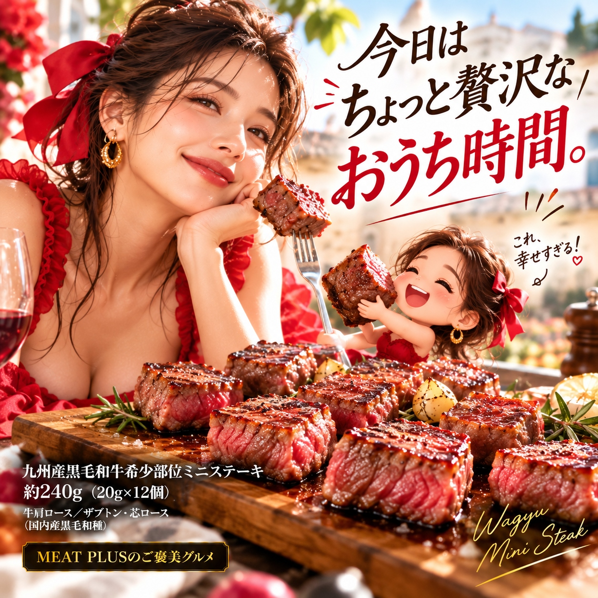

SCENE 01
M001
m 贈り物
九州産黒毛和牛希少部位ミニステーキ
【食卓が華やぐ、A4等級以上のとろけるミニステーキ。】
- 内容量約240ｇ（20ｇ×12個）
- 保存冷凍
- 産地日本
商品の特徴を読む
特別な日のディナーや、大切な方への心のこもった贈り物に、九州が誇るA4等級以上の黒毛和牛はいかがでしょうか。お届けするのは、牛一頭からわずかしか取れない希少部位「ザブトン」と「芯ロース」を使用した、贅沢なミニステーキです。 美しい霜降りが特徴のザブトンは、口に入れた瞬間に広がる濃厚な旨味ととろけるような食感が魅力。きめ細かな肉質の芯ロースは、赤身の深いコクと上品な甘みをお楽しみいただけます。 約20gの一口サイズにカットされているため、調理も簡単。冷凍庫から取り出してさっと焼くだけで、本格的な味わいが食卓に並びます。12個入りなので、必要な分だけ使えるのも嬉しいポイント。ご家族での食卓はもちろん、お弁当の一品や、おもてなし料理にも最適です。 九州の豊かな自然が育んだ黒毛和牛の特別な味わいを、ぜひご家庭でご堪能ください。このミニステーキが、あなたの食卓に笑顔と彩り豊かなひとときをお届けします。
公式サイトへ移動します。価格・在庫・配送条件は移動先で最終確認してください。

SCENE 02
美しい霜降りが特徴のザブトンは、口に入れた瞬間に広がる濃厚な旨味ととろけるような食感が魅力。
SCENE 03
冷凍庫から取り出してさっと焼くだけで、本格的な味わいが食卓に並びます。
PRODUCT INFORMATION
購入前に確認したい商品情報
- 商品名
- 九州産黒毛和牛希少部位ミニステーキ
- 商品規格
- 約240ｇ（20ｇ×12個）
- 保存方法
- 冷凍
- 原産国
- 日本
- 製造地
- 日本
- 賞味期限
- 発送日より3ヶ月
原材料
牛肩ロース/ザブトン・芯ロース（国内産黒毛和種）
FAQ
購入前のよくあるご質問
おすすめの食べ方を教えてください。
冷蔵庫でゆっくり解凍後、強火のフライパンで両面をさっと焼いてお召し上がりいただくのがおすすめです。塩コショウだけでも十分に肉の旨みを楽しめますが、お好みでわさび醤油やステーキソースを添えても美味しくいただけます。
ギフトとして贈りたいのですが、のしやラッピングは可能ですか？
はい、ギフト対応も承っております。ご注文時にのしの種類や名入れのご希望などをお知らせください。大切な方への贈り物として、心を込めてご用意いたします。（※詳細は各店舗のギフト対応案内をご確認ください）
MEAT PLUS OFFICIAL SHOP
【食卓が華やぐ、A4等級以上のとろけるミニステーキ。】
仕入れ・加工・梱包・発送まで自社で行うMEAT PLUSの公式オンラインショップでご注文いただけます。
公式オンラインショップで購入する